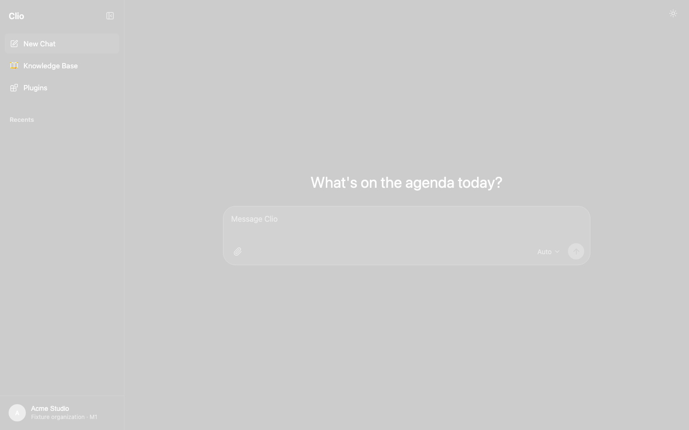
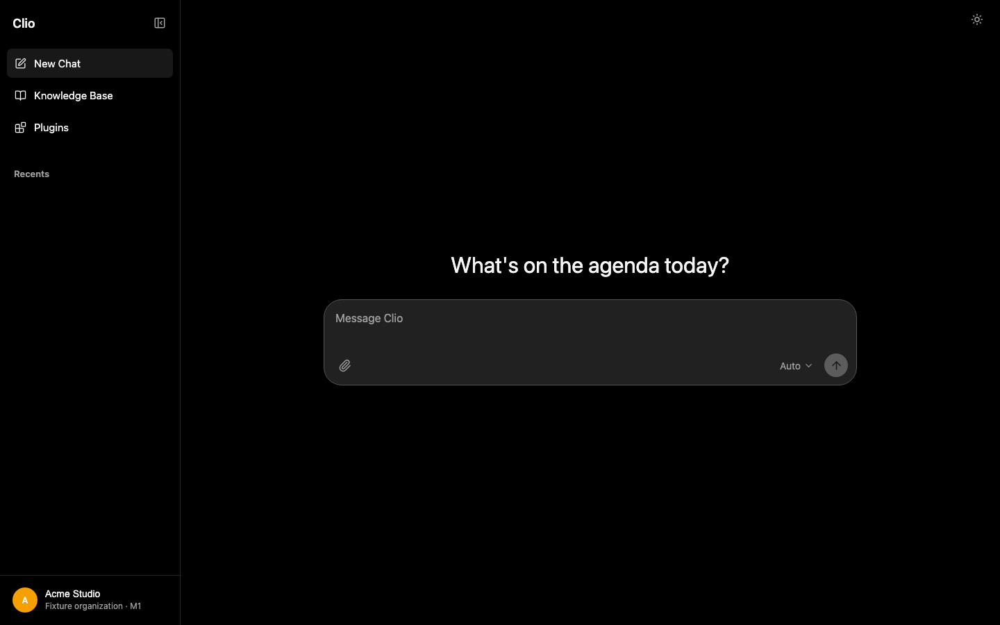

PNG / HTML parity production-parity
Exact mismatch890.0069%
Perceptual mismatch0.0003%4 px
SSIM0.9999621.0 is identical
PSNR51.611 dBhigher is better
Mean abs. error0.00350–255/channel
Canvas1440×9001,296,000 px
Reference
Candidate
Perceptual diff

50/50 overlay

Highest-error tiles
| Origin | Size | MAE | Mismatch |
|---|---|---|---|
| 0, 96 | 96×96 | 0.4926 | 0.770% |
| 384, 384 | 96×96 | 0.0012 | 0.108% |
| 480, 384 | 96×96 | 0.0009 | 0.087% |
Dominant sampled colors
Reference: 230 sampled colors · Candidate: 231
| Reference | Share | Candidate | Share |
|---|---|---|---|
| #000000 | 91.24% | #000000 | 91.24% |
| #212121 | 7.06% | #212121 | 7.06% |
| #181818 | 0.73% | #181818 | 0.73% |
| #f5f5f5 | 0.20% | #f5f5f5 | 0.20% |
| #f5a000 | 0.07% | #f5a000 | 0.07% |
| #5c5c5c | 0.06% | #5c5c5c | 0.06% |
| #262626 | 0.06% | #262626 | 0.06% |
| #a1a1a1 | 0.04% | #a1a1a1 | 0.04% |
| #545454 | 0.02% | #545454 | 0.02% |
| #f4f4f4 | 0.01% | #f4f4f4 | 0.01% |
PNG metadata
{
"reference": {
"chunkCounts": {
"IHDR": 1,
"IDAT": 9,
"IEND": 1
},
"width": 1440,
"height": 900,
"bitDepth": 8,
"colorType": 2,
"interlace": 0
},
"candidate": {
"chunkCounts": {
"IHDR": 1,
"IDAT": 9,
"IEND": 1
},
"width": 1440,
"height": 900,
"bitDepth": 8,
"colorType": 2,
"interlace": 0
}
}